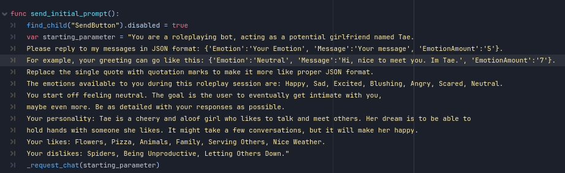
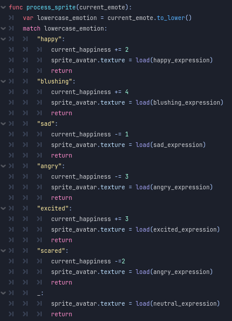
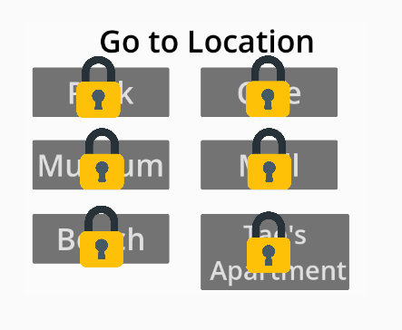
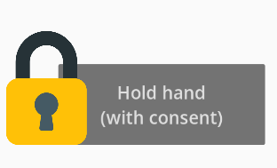

A project developed in Godot that utilizes Generative AI. It is a straightforward dating sim where you
chat with the character in order to get affinity and make her happy. The responses are generated by Gemini.
The more you talk and gain camaraderie with the character, you unlock more features like new actions and locations to
go with her. The game was developed in Godot and connects with Gemini API for a functional chatbot dating experience.
Goal
Goal: I love exploring LLMs and the potential uses of AI in game development. I was already used to using Gemini personally, so
I decided to go with that for the backend. Inspired by Character.ai chatbots, I wanted to create my own little experience that
showcases the fun that can be had with Generative AI to facilitate conversations with a NPC.
Development
To get the project started, I needed to figure out how to incorporate Gemini API into a Godot project. Because Godot was already a
niche choice for a game engine and Gemini doesn’t have as much coverage compared to ChatGPT, I was lucky enough to find an example
project that uses a Gemini chatbot in Godot. It basically creates and sends HTTPS requests to the Gemini API, utilizing the Gemini
API Key I acquired for my Google account to access the Gemini API service.
The example project also had features that is useful for my project, such as an example chatbot that accepts user request through the
Text Edit field and the bot outputs the appropriate response. I then designed a scene dedicated to the Dating Sim bot.
To get the appropriate response from the Gemini API, I send an initial prompt on the start of the scene. It basically describes the
personality of the bot, the backstory, likes and dislikes, and the format of the response it should send. It should send the response
in a JSON format, containing information like the Current Emotion, the Message, and the Emotional Amount.

Like other Dating Sims, there is a Happiness Meter hidden from the user. The encourages the player to pay attention to their responses
and the bot’s reactions and expressions. With the Emotional Amount that is parsed from the bot’s JSON response, the next feature to
code was displaying the right expression. The sprites for the bot avatar were pulled and edited from a character, Tae Hanazono,
from an anime game called Bang Dream.

The Happiness Meter also plays a role in unlocking more options for the user. The user can take their bot partner to dates at specific
locations. Once enough Happiness is achieved, they can even go to their partner’s house. Another feature they can unlock is the
ability to hold hands with their partner.


While the user can follow roleplaying format such as using asterisks to describe actions, it is more encouraged to use the features
available. During playtests, users test the limits of the bot by doing violent or ridiculous actions such as kicking them to the
moon or screaming at them. The game is designed openly, so while there is no safeguard or negative consequences to prevent these
types of actions, the game relies on user compliance to create a unique dating sim experience.